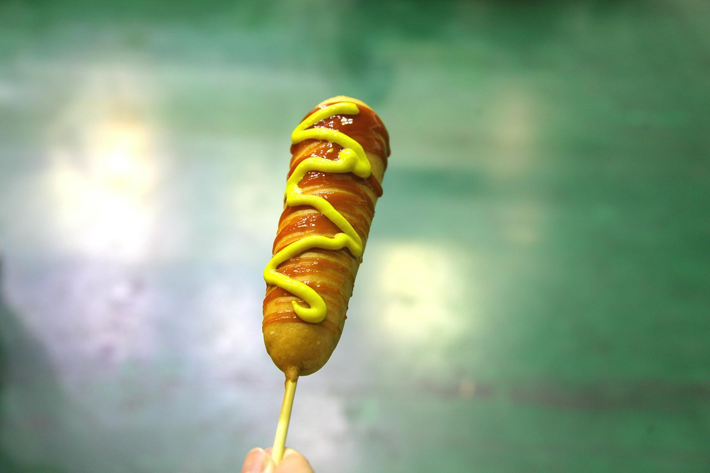

Corn-Dog Recipe

This Recipe will help you prepare the best Corn Dog ever with very simple ingredients and instructions
Ingredients:
- Cornmeal and flour: This corn dog batter starts with yellow cornmeal and all-purpose flour.
- Sugar: A pinch of sugar lends a hint of sweetness.
- Baking powder: Baking powder acts as a leavener, which means it helps the batter rise.
- Sugar: Two tablespoons of white sugar add subtle sweetness and enhance the flavor of the sauce.
- Salt and pepper: Salt enhances the flavors of the other ingredients.
- Milk: A cup of milk adds moisture, ensuring a tender coating.
- Egg: An egg gives the batter even more moisture and acts as a binder, which means it helps hold the batter together.
- Oil: Fry the corn dogs in a neutral oil with a high smoke point, such as vegetable oil.
- Beef frankfurters: This recipe calls for beef frankfurters, but you can use pork franks (or hot dogs) if you'd prefer.
How to Make Corn Dog Step-By-Step
- Make the batter by combining the dry ingredients, then stirring in the milk and egg.
- Skewer the frankfurters and roll in the batter.
- Fry the corn dogs in hot oil until lightly browned.
go back to Recipes